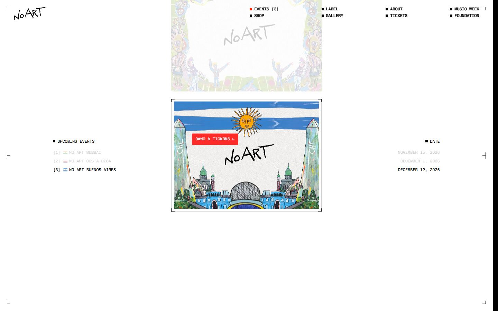
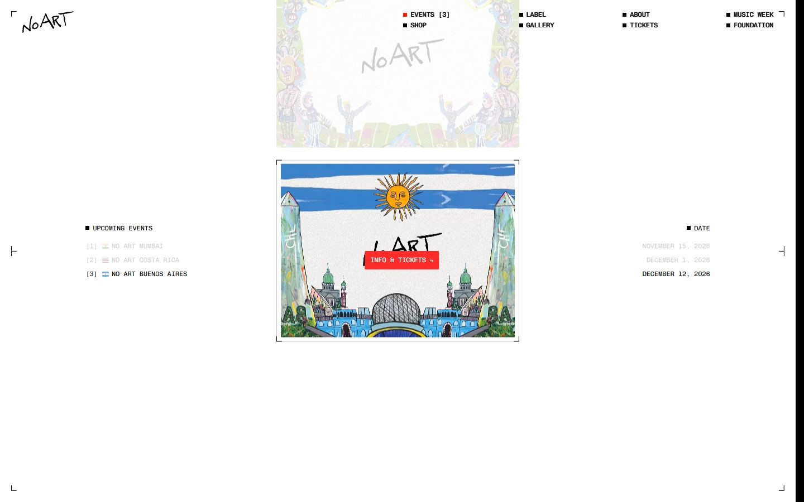
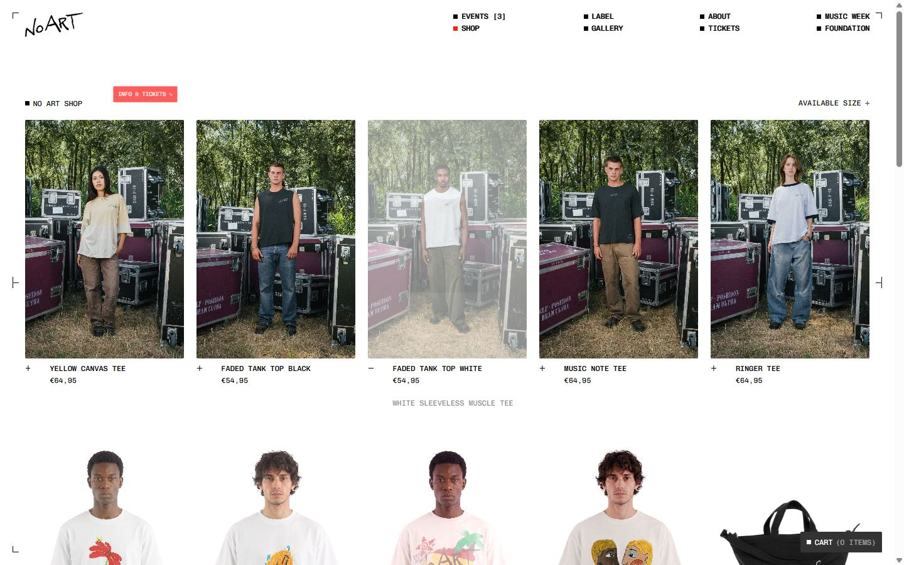
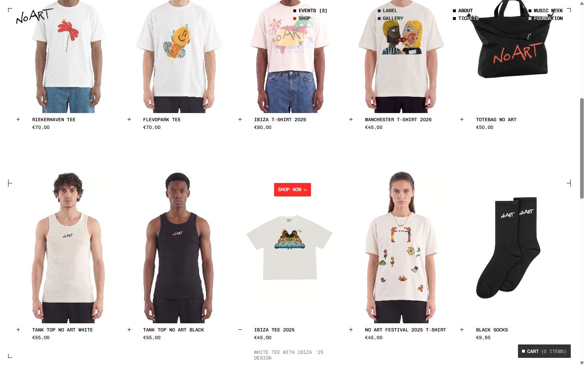
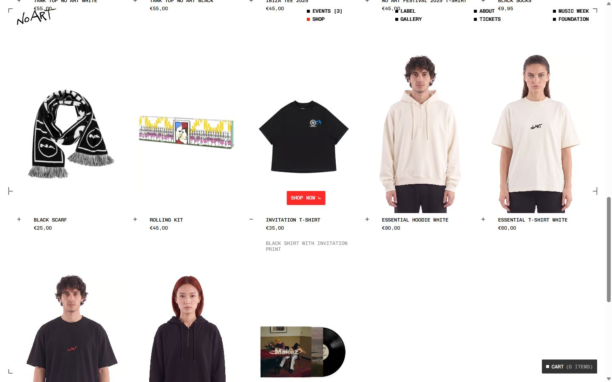
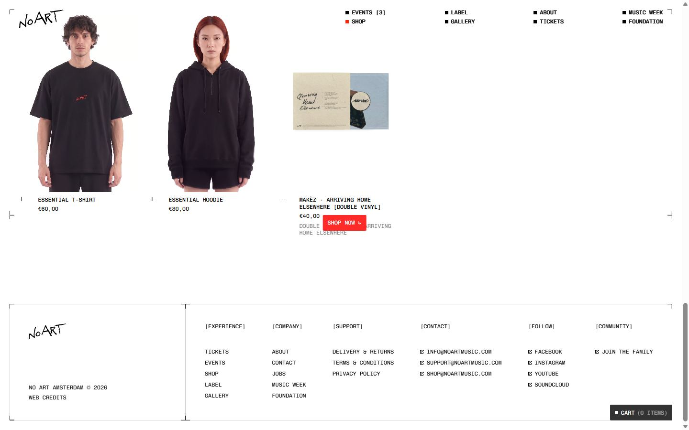
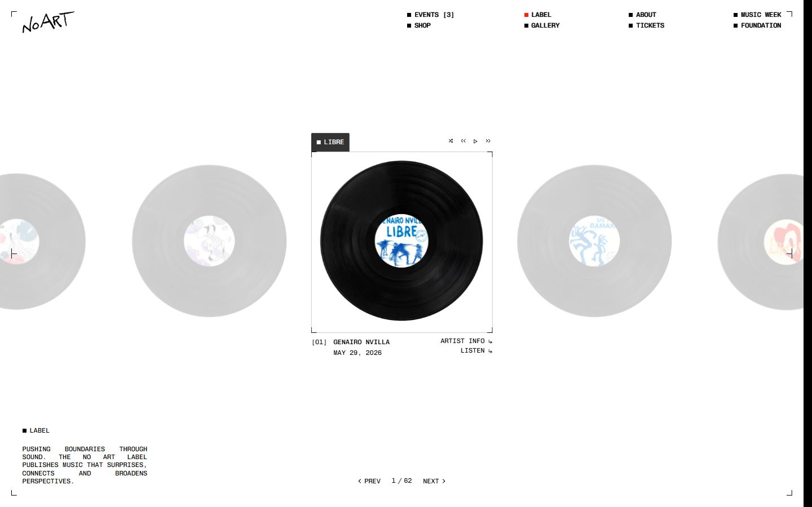
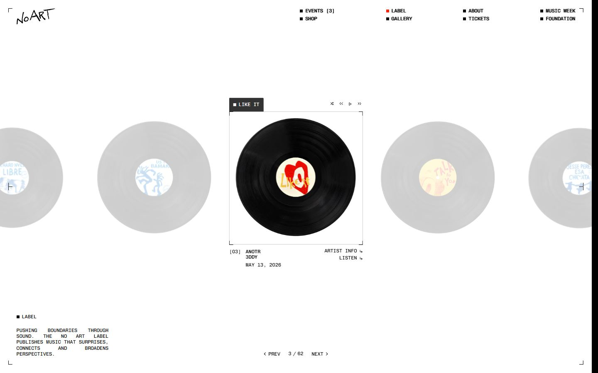
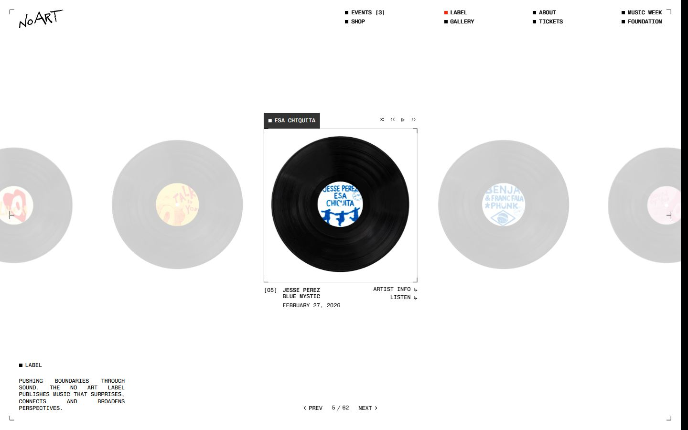
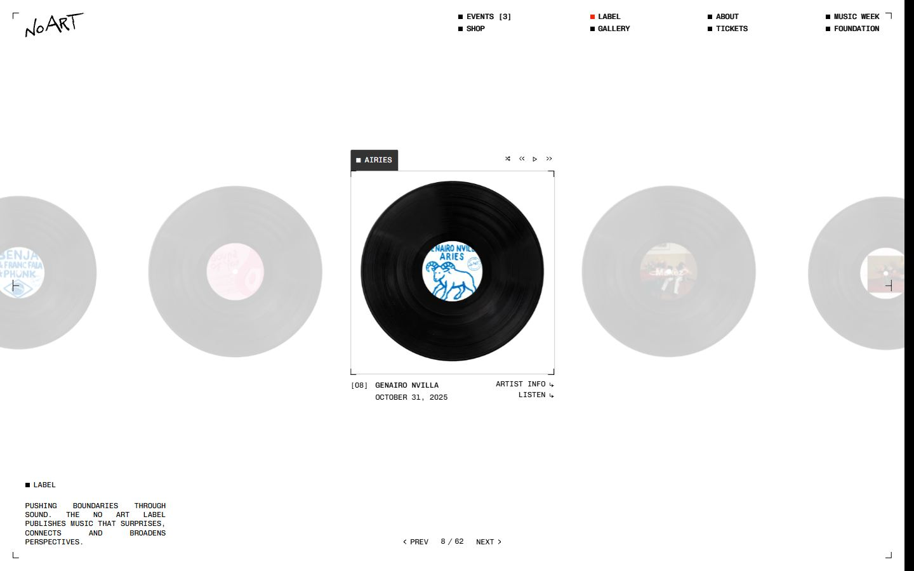

No Art
Captures desktop

Pages internes












Mobile


Stack détectée
Flip (GSAP), GSAP, Lenis, Lottie, ScrollTrigger, Shopify, SplitText/SplitType, Swiper, Three.js, Virtual scroll, WebGL, Webflow, jQuery
Versions : GSAP 3.11.0 · Three.js r?
Shaders GLSL personnalisés extraits : 5 (voir shaders.glsl)
Design tokens
Couleurs (fonds, pondérées par surface)
#000000 · #ffffff · #fefffe · #808080
Couleurs de texte
#000000 · #ffffff · #808080
Polices utilisées (par volume de texte)
Chivomono · Nue Haas Grotesk Text Pro · JetBrains Mono
Fichiers de police chargés
Typographie
| Élément | Police | Taille | Graisse | Interligne | Interlettrage | Casse |
|---|---|---|---|---|---|---|
| h2 | "Nue Haas Grotesk Text Pro", Arial, sans-serif | 47.5px | 600 | 47.5px | -1.44px | uppercase |
| p | Chivomono, Arial, sans-serif | 11.875px | 400 | 14.25px | normal | uppercase |
| a | Chivomono, Arial, sans-serif | 15.8333px | 400 | 19px | normal | uppercase |
| body | Chivomono, Arial, sans-serif | 15.8333px | 400 | 19px | normal | uppercase |
Échelle des tailles de texte
11.875px (120) · 17.8125px (104) · 15.8333px (38) · 47.5px (17) · 19.7917px (9)
Arrondis
1.97917px · 1000px · 50%
Transitions CSS fréquentes
Points de rupture (media queries)
767px · 991px · 479px · 768px · 992px · 1921px
Animations CSS (@keyframes)
spin
Variables CSS (:root)
--_colors---light--100: white; --_typography---fonts--primary-font: Chivomono, Arial, sans-serif; --_colors---dark--100: black; --_typography---body-size--large: .875em; --_typography---line-height--body: 1.2; --_typography---fonts--heading-font: "Nue Haas Grotesk Text Pro", Arial, sans-serif; --_typography---heading-size--large: 6em; --_typography---line-height--heading: 1; --_typography---heading-size--medium: 2em; --_typography---heading-size--small<deleted|variable-956d8639-3f91-8c43-bf39-5a5440dbb4bf>: 3em; --_typography---heading-size--xsmall<deleted|variable-e9946362-2855-1512-ab62-642be44ae7fa>: 1.25em; --_typography---body-size--regular<deleted|variable-cb684c50-56d2-908b-34b0-0c28a633ebe1>: 1em; --_typography---link-size--regular: .75em; --_colors---brand--100: #ff2b29; --_typography---rich-text--h1: 6em; --_typography---rich-text--h2: 4em; --_typography---rich-text--h3: 2.5em; --_typography---rich-text--h4: 1.75em; --padding-global--regular: 1.25em; --padding-section--regular: 7.5em; --_colors---grey--100: grey; --_typography---tag-size--regular: .75em; --border-radius--small: .125em; --_colors---dark--20: #0003; --_colors---grey--dark: #333; --_typography---tag-size--small: .625em; --_colors---dark--50: #00000080; --_typography---button-size--large: 1.25em; --_colors---light--20: #fff3; --_typography---button-size--regular: 1em; --gap-spacing--large: 4em; --gap-spacing--regular: 3em; --border-radius--large: 0em; --gap-spacing--small: 1.5em; --border-radius--medium: 0em; --border-radius--regular: 0em; --_colors---light--50: #ffffff80; --_colors---dark--80: #000c; --_typography---rich-text--body: 1em; --_typography---rich-text--contents: 1em; --_typography---line-height--button: 1; --size-unit: 16; --size-container-ideal: 390; --size-container-min: 320px; --size-container-max: 479px; --size-container: clamp(var(--size-container-min), 100vw, var(--size-container-max)); --size-font: 21.333333px;
Structure de la home
Hauteur : 4120 px — 1343 nœuds DOM — canvas 1, vidéos 1, images 96
| # | Bloc | Hauteur | Titre | Médias |
|---|---|---|---|---|
| 1 | section .section_home-hero | 900 | 3 | |
| 2 | section .section_default | 755 | AN EXPERIENCE WHERE MUSIC, ART AND PEOPLE UNITe | 0 |
| 3 | section .section_default is-overflow-hidden | 560 | 3 | |
| 4 | section .section_globe | 792 | Discover the world of no art around the globe | 1 |
| 5 | section .section_default is-overflow-hidden | 831 | 20 |
Navigation : Events [3] · Shop · Label · Gallery · About · Tickets · Music week · Foundation
Boutons / CTA : Next upNo Art MumbaiNovember 15, 2026
SEO
Plan des titres
Performance (mesure locale, Chrome headless, connexion non bridée)
Mobile
Fichiers
captures/ : arrivée, scroll desktop (1440×900), pleine page, pages internes, mobile (390×844 @2x) ; vidéo de scroll dans la release GitHub « videos » (lien en haut de fiche)page.html : DOM rendu · styles.css : CSS chargé · scripts/ : JS chargé (index dans _index.json) · shaders.glsl : shaders extraits · rea-bundle.json : analyse REA du bundle (chunks, routes, endpoints)